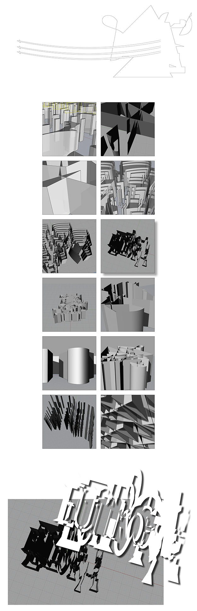

PHASE 1
Initial 'typographic' experiments were conducted using adobe illustrator and rhino to begin developing a specific formal language for the city of Eutropia.
1.excavation


2.deconstruction
3.reconstruction

PHASE 2
The more complex visual 'spaces' were simplified down to a set of workable 2d marks. From here, physical itterations of the symbols generated were reconstructed using mylar and paint to be photographed.
1.excavation


2.deconstruction
3.reconstruction
PHASE 3
A final physical itteration was completed after introducing colored lighting. From here a series of digital compositions were created, informed by the physical iterations, to entertain the idea of scaleless application.
1.excavation


2.deconstruction

3.reconstruction